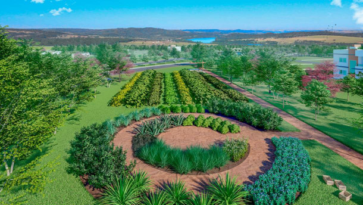
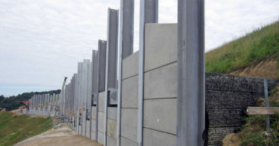
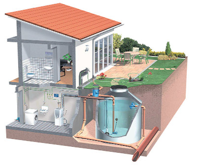
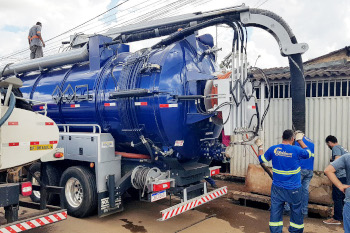

Pavimentação Permeável
Utilizar pavimentos permeáveis em calçadas, estacionamentos e outras áreas pavimentadas permite que a água da chuva infiltre no solo em vez de escoar diretamente para as ruas. Isso diminui a carga sobre os sistemas de drenagem e ajuda a recarregar os lençóis freáticos.

Valas de Infiltração e Biovaletas
Pequenas depressões no solo que captam e filtram a água da chuva. Normalmente, são preenchidas com vegetação e camadas de material filtrante, permitindo que a água infiltre lentamente no solo, reduzindo o volume que atinge as redes de drenagem convencionais.

Lagoas de Retenção e Detenção
Reservatórios temporários em áreas baixas da cidade que acumulam o excesso de água das chuvas e liberam lentamente para o sistema de drenagem, evitando sobrecarga.

Canais Abertos com Vegetação (Swales)
Canais rasos e cobertos com vegetação que captam e direcionam a água da chuva para áreas de retenção, filtrando contaminantes e evitando erosões.

Barreiras e Paredes para Contenção de Águas Pluviais
Instalação de paredes ou barreiras que direcionam a água para sistemas de retenção temporária, protegendo áreas mais vulneráveis ao alagamento.

Reservatórios em Áreas Residenciais e Comerciais
Incentivar a instalação de cisternas que armazenam a água da chuva para uso não potável, como irrigação, reduzindo o volume de água que chega ao sistema de drenagem.

Programa de Manutenção de Bueiros e Drenos
Promover a limpeza e manutenção regular de bueiros, drenos e canais pluviais para evitar entupimentos e garantir a eficiência do sistema de drenagem, principalmente em períodos de chuvas intensas.
